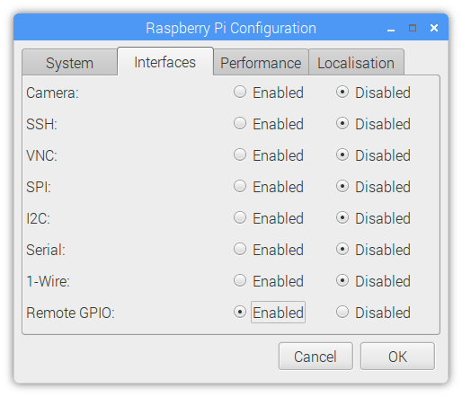

4. Configuring Remote GPIO
GPIO Zero supports a number of different pin implementations (low-level pin libraries which deal with the GPIO pins directly). By default, the RPi.GPIO library is used (assuming it is installed on your system), but you can optionally specify one to use. For more information, see the API - Pins documentation page.
One of the pin libraries supported, pigpio, provides the ability to control GPIO pins remotely over the network, which means you can use GPIO Zero to control devices connected to a Raspberry Pi on the network. You can do this from another Raspberry Pi, or even from a PC.
See the Remote GPIO Recipes page for examples on how remote pins can be used.
4.1. Preparing the Raspberry Pi
If you’re using Raspberry Pi OS (desktop - not Lite) then you have everything you need to use the remote GPIO feature. If you’re using Raspberry Pi OS Lite, or another distribution, you’ll need to install pigpio:
$ sudo apt install pigpio
Alternatively, pigpio is available from abyz.me.uk.
You’ll need to enable remote connections, and launch the pigpio daemon on the Raspberry Pi.
4.1.1. Enable remote connections
On the Raspberry Pi OS desktop image, you can enable Remote GPIO in the Raspberry Pi configuration tool:


Alternatively, enter sudo raspi-config on the command line, and enable
Remote GPIO. This is functionally equivalent to the desktop method.
This will allow remote connections (until disabled) when the pigpio daemon is launched using systemctl (see below). It will also launch the pigpio daemon for the current session. Therefore, nothing further is required for the current session, but after a reboot, a systemctl command will be required.
4.1.2. Command-line: systemctl
To automate running the daemon at boot time, run:
$ sudo systemctl enable pigpiod
To run the daemon once using systemctl, run:
$ sudo systemctl start pigpiod
4.1.3. Command-line: pigpiod
Another option is to launch the pigpio daemon manually:
$ sudo pigpiod
This is for single-session-use and will not persist after a reboot. However,
this method can be used to allow connections from a specific IP address, using
the -n flag. For example:
$ sudo pigpiod -n localhost # allow localhost only
$ sudo pigpiod -n 192.168.1.65 # allow 192.168.1.65 only
$ sudo pigpiod -n localhost -n 192.168.1.65 # allow localhost and 192.168.1.65 only
Note
Note that running sudo pigpiod will not honour the Remote GPIO
configuration setting (i.e. without the -n flag it will allow remote
connections even if the remote setting is disabled), but sudo systemctl
enable pigpiod or sudo systemctl start pigpiod will not allow remote
connections unless configured accordingly.
4.2. Preparing the control computer
If the control computer (the computer you’re running your Python code from) is a Raspberry Pi running Raspberry Pi OS (or a PC running Raspberry Pi Desktop x86), then you have everything you need. If you’re using another Linux distribution, Mac OS or Windows then you’ll need to install the pigpio Python library on the PC.
4.2.1. Raspberry Pi
First, update your repositories list:
$ sudo apt update
Then install GPIO Zero and the pigpio library for Python 3:
$ sudo apt install python3-gpiozero python3-pigpio
or Python 2:
$ sudo apt install python-gpiozero python-pigpio
Alternatively, install with pip:
$ sudo pip3 install gpiozero pigpio
or for Python 2:
$ sudo pip install gpiozero pigpio
4.2.2. Linux
First, update your distribution’s repositories list. For example:
$ sudo apt update
Then install pip for Python 3:
$ sudo apt install python3-pip
or Python 2:
$ sudo apt install python-pip
(Alternatively, install pip with get-pip.)
Next, install GPIO Zero and pigpio for Python 3:
$ sudo pip3 install gpiozero pigpio
or Python 2:
$ sudo pip install gpiozero pigpio
4.2.3. Mac OS
First, install pip. If you installed Python 3 using brew, you will already have pip. If not, install pip with get-pip.
Next, install GPIO Zero and pigpio with pip:
$ pip3 install gpiozero pigpio
Or for Python 2:
$ pip install gpiozero pigpio
4.2.4. Windows
Modern Python installers for Windows bundle pip with Python. If pip is not installed, you can follow this guide. Next, install GPIO Zero and pigpio with pip:
C:\Users\user1> pip install gpiozero pigpio
4.3. Environment variables
The simplest way to use devices with remote pins is to set the
PIGPIO_ADDR environment variable to the IP address of the desired
Raspberry Pi. You must run your Python script or launch your development
environment with the environment variable set using the command line. For
example, one of the following:
$ PIGPIO_ADDR=192.168.1.3 python3 hello.py
$ PIGPIO_ADDR=192.168.1.3 python3
$ PIGPIO_ADDR=192.168.1.3 ipython3
$ PIGPIO_ADDR=192.168.1.3 idle3 &
If you are running this from a PC (not a Raspberry Pi) with gpiozero and the
pigpio Python library installed, this will work with no further
configuration. However, if you are running this from a Raspberry Pi, you will
also need to ensure the default pin factory is set to
PiGPIOFactory. If RPi.GPIO is installed,
this will be selected as the default pin factory, so either uninstall it, or
use the GPIOZERO_PIN_FACTORY environment variable to override it:
$ GPIOZERO_PIN_FACTORY=pigpio PIGPIO_ADDR=192.168.1.3 python3 hello.py
This usage will set the pin factory to
PiGPIOFactory with a default host of
192.168.1.3. The pin factory can be changed inline in the code, as seen in
the following sections.
With this usage, you can write gpiozero code like you would on a Raspberry Pi, with no modifications needed. For example:
from gpiozero import LED
from time import sleep
red = LED(17)
while True:
red.on()
sleep(1)
red.off()
sleep(1)
When run with:
$ PIGPIO_ADDR=192.168.1.3 python3 led.py
will flash the LED connected to pin 17 of the Raspberry Pi with the IP address
192.168.1.3. And:
$ PIGPIO_ADDR=192.168.1.4 python3 led.py
will flash the LED connected to pin 17 of the Raspberry Pi with the IP address
192.168.1.4, without any code changes, as long as the Raspberry Pi has the
pigpio daemon running.
Note
When running code directly on a Raspberry Pi, any pin factory can be used
(assuming the relevant library is installed), but when a device is used
remotely, only PiGPIOFactory can be used, as
pigpio is the only pin library which supports remote GPIO.
4.4. Pin factories
An alternative (or additional) method of configuring gpiozero objects to use
remote pins is to create instances of
PiGPIOFactory objects, and use them when
instantiating device objects. For example, with no environment variables set:
from gpiozero import LED
from gpiozero.pins.pigpio import PiGPIOFactory
from time import sleep
factory = PiGPIOFactory(host='192.168.1.3')
led = LED(17, pin_factory=factory)
while True:
led.on()
sleep(1)
led.off()
sleep(1)
This allows devices on multiple Raspberry Pis to be used in the same script:
from gpiozero import LED
from gpiozero.pins.pigpio import PiGPIOFactory
from time import sleep
factory3 = PiGPIOFactory(host='192.168.1.3')
factory4 = PiGPIOFactory(host='192.168.1.4')
led_1 = LED(17, pin_factory=factory3)
led_2 = LED(17, pin_factory=factory4)
while True:
led_1.on()
led_2.off()
sleep(1)
led_1.off()
led_2.on()
sleep(1)
You can, of course, continue to create gpiozero device objects as normal, and create others using remote pins. For example, if run on a Raspberry Pi, the following script will flash an LED on the controller Pi, and also on another Pi on the network:
from gpiozero import LED
from gpiozero.pins.pigpio import PiGPIOFactory
from time import sleep
remote_factory = PiGPIOFactory(host='192.168.1.3')
led_1 = LED(17) # local pin
led_2 = LED(17, pin_factory=remote_factory) # remote pin
while True:
led_1.on()
led_2.off()
sleep(1)
led_1.off()
led_2.on()
sleep(1)
Alternatively, when run with the environment variables
GPIOZERO_PIN_FACTORY=pigpio PIGPIO_ADDR=192.168.1.3 set, the following
script will behave exactly the same as the previous one:
from gpiozero import LED
from gpiozero.pins.rpigpio import RPiGPIOFactory
from time import sleep
local_factory = RPiGPIOFactory()
led_1 = LED(17, pin_factory=local_factory) # local pin
led_2 = LED(17) # remote pin
while True:
led_1.on()
led_2.off()
sleep(1)
led_1.off()
led_2.on()
sleep(1)
Of course, multiple IP addresses can be used:
from gpiozero import LED
from gpiozero.pins.pigpio import PiGPIOFactory
from time import sleep
factory3 = PiGPIOFactory(host='192.168.1.3')
factory4 = PiGPIOFactory(host='192.168.1.4')
led_1 = LED(17) # local pin
led_2 = LED(17, pin_factory=factory3) # remote pin on one pi
led_3 = LED(17, pin_factory=factory4) # remote pin on another pi
while True:
led_1.on()
led_2.off()
led_3.on()
sleep(1)
led_1.off()
led_2.on()
led_3.off()
sleep(1)
Note that these examples use the LED class, which takes a pin
argument to initialise. Some classes, particularly those representing HATs and
other add-on boards, do not require their pin numbers to be specified. However,
it is still possible to use remote pins with these devices, either using
environment variables, or the pin_factory keyword argument:
import gpiozero
from gpiozero import TrafficHat
from gpiozero.pins.pigpio import PiGPIOFactory
from time import sleep
gpiozero.Device.pin_factory = PiGPIOFactory(host='192.168.1.3')
th = TrafficHat() # traffic hat on 192.168.1.3 using remote pins
This also allows you to swap between two IP addresses and create instances of multiple HATs connected to different Pis:
import gpiozero
from gpiozero import TrafficHat
from gpiozero.pins.pigpio import PiGPIOFactory
from time import sleep
remote_factory = PiGPIOFactory(host='192.168.1.3')
th_1 = TrafficHat() # traffic hat using local pins
th_2 = TrafficHat(pin_factory=remote_factory) # traffic hat on 192.168.1.3 using remote pins
You could even use a HAT which is not supported by GPIO Zero (such as the Sense HAT) on one Pi, and use remote pins to control another over the network:
from gpiozero import MotionSensor
from gpiozero.pins.pigpio import PiGPIOFactory
from sense_hat import SenseHat
remote_factory = PiGPIOFactory(host='192.198.1.4')
pir = MotionSensor(4, pin_factory=remote_factory) # remote motion sensor
sense = SenseHat() # local sense hat
while True:
pir.wait_for_motion()
sense.show_message(sense.temperature)
Note that in this case, the Sense HAT code must be run locally, and the GPIO remotely.
4.5. Remote GPIO usage
Continue to: